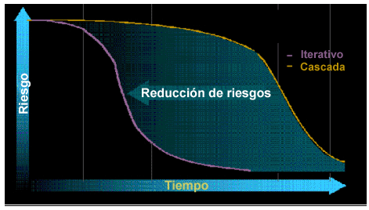

| Concepto: Demostrar el valor de forma iterativa |
 |
|
DiscusiónHay varios imperativos que subyacen a este principio. El primero es que se debe conseguir valor incremental para posibilitar una información de retorno temprana y continua. Esto se consigue dividiendo el proyecto en un conjunto de iteraciones. En cada iteración, llevamos a cabo algunos aspectos de los requisitos, diseño, implementación y prueba de la aplicación, con lo que producimos un entregable que ya está un paso más cerca de la solución final. Esto permite demostrar la aplicación a los usuarios finales y a otros interesados, o hacer que la utilicen directamente, lo que les permite facilitar un rápida información de retorno sobre cómo van las cosas. ¿Se trabaja en la dirección adecuada? ¿Están satisfechos los interesados con los resultados hasta el momento? ¿Deben cambiarse las características que se han implantado hasta el momento? Y finalmente, ¿qué características adicionales deben implementarse para añadir valor empresarial? Si respondemos satisfactoriamente estas preguntas, será más fácil que los interesados confíen en que el sistema que estamos desarrollando va a satisfacer sus necesidades. También reduce las posibilidades de excederse en la ingeniería de nuestro enfoque o de añadir funciones que no sean útiles para el usuario final. El segundo imperativo es la optimización de las demostraciones y la información de retorno para adaptar nuestros planes. En lugar de depender de la valoración de especificaciones, como las especificaciones de requisitos, modelos de diseño o los planes, se debe evaluar cómo funciona el código desarrollado hasta el momento. Esto significa que debemos utilizar los resultados de las pruebas y demostraciones del código que funciona que realicemos ante los interesados para determinar si trabajamos en la dirección correcta. De esta forma, tendremos una idea clara de dónde nos encontramos, de lo rápido que está progresando el equipo y de si necesitamos hacer correcciones sobre la marcha para completar adecuadamente el proyecto. Entonces podemos utilizar esta información para actualizar el plan general del proyecto y desarrollar unos planes detallados para la siguiente iteración. El tercer imperativo subyacente es aceptar y gestionar los cambios. Las aplicaciones actuales son demasiado complejas para que los requisitos, el diseño, la implementación y las pruebas se alineen perfectamente la primera vez. Por el contrario, los métodos más eficaces de desarrollo de aplicaciones aceptan la inevitabilidad de los cambios. Mediante una información de retorno temprana y continua, aprendemos a mejorar la aplicación, y el enfoque iterativo nos proporciona la oportunidad de implementar esos cambios de forma incremental. Todos estos cambios necesitan gestionarse haciendo que los procesos y las herramientas estén en su sitio de forma que se puedan gestionar eficazmente los cambios sin sacrificar la creatividad. El cuarto imperativo que subyace a este principio es la necesidad de descartar los riesgos principales al principio del ciclo vital, como se ilustra en el diagrama siguiente. Deben abordarse los principales riesgos técnicos, comerciales y programáticos cuanto antes, en lugar de posponer la resolución de los riesgos hacia el final del proyecto. Esto se hace valorando continuamente los riesgos que se están encarando y abordando los más importantes en la siguiente iteración. En los proyectos satisfactorios, las iteraciones iniciales implican que el interesado acepte una visión y unos requisitos de alto nivel, incluido el diseño arquitectónico, la implementación y las pruebas para mitigar los riesgos técnicos. Asimismo es importante conservar la información necesaria para forzar las decisiones en torno a cuáles son los principales activos reutilizables o el software comercializado (COTS) que deben utilizarse.  Perfiles de reducción de riesgos para los desarrollos de cascada e iterativos. Uno de los principales objetivos del desarrollo iterativo es reducir el riesgo en las primeras fases. Esto se realiza analizando, priorizando y atacando los principales riesgos en cada iteración (consulte: Material de soporte: Desarrollo iterativo). Si desea instrucciones adicionales acerca de la organización del ciclo vital de desarrollo en torno a iteraciones, puede consultar Concepto: Iteración y Concepto: Fase. |
© Copyright IBM Corp. 1987, 2006. Reservados todos los derechos. |